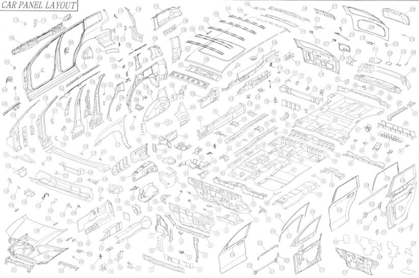

사무실 전경

K&L Toolings는 2010년에 설립된 금형 설계 전문 기업으로, 전 임직원이 최고의 품질과 기술력을 목표로 끊임없는 노력과 도전을 이어가고 있습니다.
축적된 설계 역량과 제작 경험을 바탕으로 글로벌 경쟁 시대에 발맞추어 도약하고 있으며, 인간 존중, 기술 개발, 품질 향상이라는 경영 철학 아래 고객 만족을 위해 최선을 다하고 있습니다.
UG NX7.5 (13 Copy), NX1899 (2 Copy), AutoCAD (15 Copy)
전문 설계 인력 구성: 총 9명 (10~20년 경력 포함)
K&L Toolings는 다음과 같은 부품 설계 및 금형 개발을 전문으로 수행합니다.

FRT DOOR INR
FRT DR HINGE
FMC 검수 금형
홈페이지: www.kn-toolings.co.kr